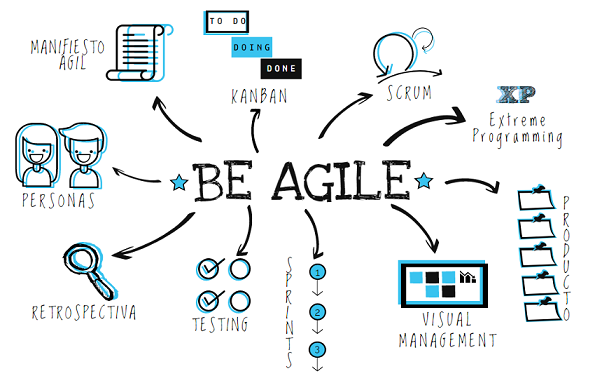
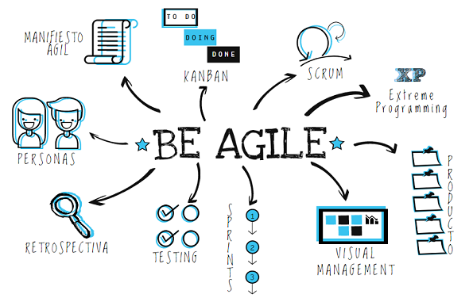

Los 12 Principios del Manifesto Agil
1.- Nuestra mayor prioridad es satisfacer al cliente mediante la entrega temprana y continua de software con valor.
2.- Aceptamos que los requisitos cambien, incluso en etapas tardías del desarrollo. Los procesos Ágiles aprovechan el cambio para proporcionar ventaja competitiva al cliente.
3.- Entregamos software funcional frecuentemente, entre dos semanas y dos meses, con preferencia al periodo de tiempo más corto posible.
4.- Los responsables de negocio y los desarrolladores trabajamos juntos de forma cotidiana durante todo el proyecto.
5.- Los proyectos se desarrollan en torno a individuos motivados. Hay que darles el entorno y el apoyo que necesitan, y confiarles la ejecución del trabajo.
6.-El método más eficiente y efectivo de comunicar información al equipo de desarrollo y entre sus miembros es la conversación cara a cara.
7.- El software funcionando es la medida principal de progreso.
8.- Los procesos Ágiles promueven el desarrollo sostenible. Los promotores, desarrolladores y usuarios debemos ser capaces de mantener un ritmo constante de forma indefinida.
9.- La atención continua a la excelencia técnica y al buen diseño mejora la Agilidad.
10.- La simplicidad, o el arte de maximizar la cantidad de trabajo no realizado, es esencial.
11.- Las mejores arquitecturas, requisitos y diseños emergen de equipos auto-organizados.
12.- A intervalos regulares el equipo reflexiona sobre cómo ser más efectivo para a continuación ajustar y perfeccionar su comportamiento en consecuencia.
Equipos y Roles:
Desarrolladores
QA (Quality assurance ejemplo testes)
Negocio:
Product Owner (Dueño del producto)
Usuarios
Stakeholders (terceras personas que tienen un interés (monetario o no) en una compañía u organización y pueden afectar o ser afectados por el negocio.)
Expertos:
Arquitectos
Técnicos
Con lo cual surgira la pregunta ¿Cómo podemos armar un buen equipo? esta pregunta se responde al definir Roles y Responsabilidades. Agile nos da los siguientes 9 pasos para crear nuestro equipo:
Equipos multidisciplinarios: Garantizar que cada una de las habilidades sea cubierta y analizar qué y a quién necesito para cubrir cada una de esas áreas un ejemplo es si se crea una app movil necesitamos a un experto creando aplicaciones moviles y podemos definirlo mas como en que sistema IOS o Android.
Reglas básicas y procesos internos: Se necesitan para tener una solución cuando se presente un conflicto estableciendo reglas basicas y procesos.
Las reglas por ejemplo pueden ser horarios, horas de reunión, quién es el experto en cada área, cómo se comunicara el equipo y por cuales canales como un chat, teléfono o en persona esto elimina muchos conflictos que pudieran presentarse.
Los procesos permitirán tener metas compartidas y un compromiso mayor como equipo.
Combinar habilidades: Vamos a identificar gente integral ( Personas que se basan en los valores y características; Logra consciencia plena de lo que es como ser pensante debido a que piensa con claridad y orden la información que recibe y procesa, explica los hechos, da razón de lo que siente, de lo que hace, de lo que piensa. Además de razonar con orden y método, de utilizar el qué con claridad en sus ideas, es consciente de su motivación, del interés que le impulsa, de su afecto, de sus valores, del por qué piensa, siente y hace.) dentro del equipo con habilidades blandas, esto nos va permitir generar especialistas y posibles mentores para futuros proyectos.
Entendimiento de principios: Lograr que todo el equipo tenga un buen entendimiento de valores, principios y de las mejores prácticas. Esto porque no todos los proyectos funcionan de la misma forma y si ya a trabajado con este tipo de metodología puede creer que se realizara de la misma forma pero no necesariamente por esto es importante definir y aclarar todo esto desde un principio.
Auto-organización: Vamos a crear una cultura de auto-organización para poder manejar la complejidad de un proyecto y así generar soluciones efectivas y mejorar el rendimiento del equipo.
Ambiente seguro y experimental: Se debe crear un ambiente de seguridad que va en función de la comodidad y de alentar al equipo a crear experimentos o hacer un spike (iteración para experimentar, indagar o buscar nuevas tecnologías para integrarlas al proyecto). Se trata de fallar primero, pero de aprender para ser más versátiles al momento de integrar nuevas cosas al proyecto.
Motivantes y desmotivantes:
Debemos identificar motivantes y desmotivantes de manera personal de cada miembro del equipo (personal) y grupal un equipo motivado sera mas efectivo. Este tipo de motivaciones dependen mucho de la persona por ejemplo Un reconocimiento público, un bono economico, una salida a cenar con todo el equipo.
Metas, planeación de iteraciones:
También se pueden buscar metas generales, de cada uno de los elementos, y del equipo para tener algo en común por lo cual trabajar.
Retrospectivas:
Qué funcionó, qué no funcionó, qué se podría mejorar y qué se podría intentar en la siguiente iteración. Y valorar si la siguiente iteración puede ser un spike.
Stand-Ups
son juntas diarias en la que se va a conversar en qué fue lo que se hizo ayer, hoy y si tenemos algún problema para que algún miembro del equipo nos ayude.
Comportamiento colaborativo:
Tomas de decisiones grupales: Brainstorming, votaciones, juegos, tecnicas(Moscow), etc
Colocación:
Ya formado el equipo y creado el compromiso. Pueden existir equipos locales y equipos remotos. Lo importante es que la comunicación sea eficiente y continua generalmente se busca crear equipos locales pero esto solo es por que la comunicación persona a persona es inmediata y esto presenta varias ventajas.
Negociacion
Siempre debe existir una colaboración constante entre todos los miembros del equipo pero existen casos en los que se presentan conflictos (entiendansen como diferencias de opinion acerca de actividades a realizar en historias de usuarios o formas de trabajar y no como problemas interpersonales entre miembros del equipo, para estos como se explico antes es necesario crear un equipo con inteligencia emocional.) por esto podemos definir las situaciones que se podrian presentar:
Como Resolver estos conflictos
Soluciones:
Problema:
Se resuelve con colaboración(ambas personas dialogan sobre sus propuestas y en conjunto buscan la mejor opción)
Desacuerdo:
Apoyo(el equipo apoya a ambas partes y tratan de unirlas para llegar a un bien común)
Concurso:
Compromiso (se alienta a las partes a tener un compromiso de unión entre ambas alternativas)
Cruzada:
Diplomacia (Para atacar una cruzada hay que ser muy diplomático. Se aparta a los involucrados y se les da a entender que esa actitud no es la correcta, y se debe mostrar de forma clara que la propuesta de esta persona no es realista o no es posible de realizar por razones claras, dándole a entender que su propuesta no es viable en ese contexto)
Guerra:
Vive con ello, cambia de opinión (en este punto el conflicto es muy difícil de solucionar, ya que pasamos por todos los puntos anteriores sin resolver el conflicto con éxito)
Comunicacion
Entre Roles
La comunicación es un basico para cualquier implementación de metodologías agiles, es la base del flujo de información por esto la comunicación siempre debe estar presente en cada uno de los proyectos de agile.
Para tener una comunicación efectiva hay que identificar a los miembros del equipo y sus roles para saber que tipo de información es prioritaria comunicarle, en las metodologías agiles tenemos por ejemplo:
El punto de vista administrativo (Stakeholders) que tiene interés en el proyecto, basados en 3 puntos fundamentales de la comunicación:
¿Estamos en tiempo?
Esto quiere decir que se mide en resultados, le importa saber que se ha terminado hasta el momento. Si estamos a tiempo, si no lo estamos, que es lo que falta, que es lo que se ha terminado, etc.
¿Estamos en costo?
Tenemos todavía cabida dentro del presupuesto. (Si o No)
¿Problemas?
Si se presentan problemas como se pueden solucionar, si hay un camino recorrido para buscar una solución eficiente o si se debe canalizar a otra parte para que se pueda encontrar dicha solución.
Punto de vista del cliente (Product Owner) Para esto existe una comunicación muy especifica se le conoce como Roadmap, basicamente es una descripción del valor del producto, es decir, es una descripción de lo que el cliente espera o que es lo que el cliente quiere hacer.
El equipo por otro lado le contesta con sus Historias de Usuario, que es la personificación de cada uno de estos requerimientos dando a entender que entienden lo que quiere hacer el dueño del producto esto si la historia cumple con el criterio de aceptación, es decir, esperar a que el cliente apruebe esa pequeña tarea para poder integrarla una vez que se haya hecho de manera correcta.
Backlog y comunicacion entre el equipo
El backlog es un contenedor lógico de las tareas que aún no se consideran en un proceso o estado activo para el equipo. Mientras mas arriba esten en el Backlog mas importancia tiene para su desarrollo. Esta es una herramienta muy importante para la comunicación efectiva por ejemplo tomemos en cuenta el punto anterior entre la comunicación Equipo - Cliente. El cliente nos dara un enunciado donde el equipo entiende que es lo que quiere el cliente luego especifican la tarea para poder integrarla una vez se acepte por parte del cliente si no se regresa al ciclo:
Un ejemplo de como utilizar esto es por ejemplo que el cliente quiere que agregemos una opción en la plataforma para agregar imagenes y nosotros le regresamos como seria esta parte del programa por ejemplo que exista un boton para añadir la imagen y esta se visualicen de forma cronologica en la plataforma. Pero el cliente nos dice que esto no es suficiente que además quiere que podamos introducir el nombre de la imagen, quien la subio, una descripción y un sistema para calificarlas. una ves que el equipo y el cliente estan en el mismo camino se hace un relese de esta tarea. Aprovechare para mostrar como es la comunicación en equipo y un ejemplo de la estructura de una historia.
Espero que con esto quede claro que es un Backlog y una historia ahora cabe mencionar que una historia esta ligada a un Wireframe que es una representación visual del producto, pero en relación a las interacciones de los usuarios y roles.
Personas
Persona es un personaje ficticio que usará nuestro producto.
El equipo está encargado de definir las características de ese usuario (nombre, edad, genero, si está casado o soltero, hijos, profesión, trabajo, su horario, pasatiempos, definanlo tanto como se pueda busquen una foto de alguien que nadie conosca e implantenle todo esto creenle una personalidad.
Definan sus meta y objetivo, que se verá resuelto con tu solución propuesta.
Cada que se tenga que tomar una desición del proyecto para incorporar a un Epic (funcionalidades extras que requieran varias iteraciones y que puedan dar un valor agregado al producto.), pueden utilizar a estas Personas para hacerlo, creando una simulación de como cambiariá su entorno. La incorporación de los Epics mejorara el producto y le dara mas valor al solucionar problemas que puedan tener los usuarios son detalles pero al final estos pequeños detalles suman mucho al producto.
Para trabajar las Historias de usuario con Epics vamos a dividir cada Epic en funcionalidades más pequeñas que podrán ir definiendo las historias de usuario que formarán dicho Epic.
Por qué es utili trabajar con personas?.
Estas permiten imaginarnos que estamos ayudando a alguien y estamos resolviendo un problema que tienen el cual no se habria pensado en el de no ser por lo definido del caracter de esta persona, Al simular personas estas se comportan como los posibles usuarios reales del producto y si no las creamos puede que se presenten problemas que no habiamos contemplado por ejemplo que a nosotros como programadores nos sea muy natural el uso del software que desarrollamos pero a una persona externa a este mundo le cueste mucho trabajo utilizar el programa. O un ejemplo mas especifico que la letra de nuestro programa sea muy pequeña y nuestra persona tiene problemas de visión por lo que poder ajustar la letra del programa le seria de mucha utilidad.
Recordemos que todo esto es para crear una mejor planificación y con ello crear mejores Historias de usuario segmentando mejor lo que se realizara. Existen tambien ya modelos para crear historias de usuario mas eficientes un ejemplo es el modelo INVEST:
Independent: Pueden realizarse en cualquier orden, no dependen unas de otras.
Negotiable: Son promesas de comunicación, no son contratos.
Valuable: Siempre debe dar valor al cliente, no debe crear historias técnicas.
Estimable: Si no se puede estimar es porque se debe conversar más aun.
Small : Pequeñas pero no demasiado.
Testable: Si no se puede probar, ¿Cómo puede saber que esté terminada?
Estimar tiempos
Con los conceptos anteriores bien entendidos surgira la pregunta ¿Cómo estimo el tiempo de las Historias de usuario?
como se puede ver en la imagen numero 2 donde se muestra un ejemplo de como es una historia de usuario podemos ver que hay un tiempo estimado en horas para realizar esta tarea y un valor en puntos
¿que es todo esto y como se calcula?.
El valor en puntos es la dificultad que tiene cada tarea. Esto son asignados por un grupo, este grupo puede por ejemplo estar formado por los expertos en cada tema ellos se encargaran de asignar un valor numerico a cada historia de usuario el cual es la dificultad de la tarea. Existen diversas tecnicas para realizar esta estimación de puntos un ejemplo es usar la Sucesión de Fibonacci (https://es.wikipedia.org/wiki/Sucesi%C3%B3n_de_Fibonacci) como metodo para calificar la dificultad de las actividades por ejemplo la creación y normalización de la base de datos. Cada miembro dara un valor de la Sucesión de Fibonacci intentando que no sean numeros muy altos para darle su valor en puntos a la tarea una ves que todos los miembros expresen su opinión de cuantos puntos merece esta actividad se priorizan opiniones como la del experto en esta area obviamente se deben intercambiar opiniones de por que cada miembro dio tal valorización a esta tarea. Tambien por ejemplo en este mismo caso podemos imaginar que esta presente un experto en diseño de interfaces UX el cual no tiene conocimiento de bases de datos el puede decidir no participar en la valorización de esta tarea.
¿Qué pasa si la tarea es muy compleja y necesito asignarle un valor muy alto?
Este caso es muy probable que se presente y por ejemplo se estima que se le debe de asignar un valor de 21 puntos (lo cual es muy alto). Puede trabajarse asi sin problemas pero en metodologías agiles se concidera una mejor idea analizar el por que esta tarea vale tanto y mejor dividirla en tareas mas pequeñas que tengan un menor valor. Esto es por que Agile utiliza mucho el principio "Divide Y Venceras".
Priorizar Tareas
Un buen subtema sobre la estimación de tiempos es saber el por que es bueno priorizar tareas esto es por que agiliza las tareas y permite concentrarse en lo mas prioritario y no perder el tiempo con tareas que no son tan importantes existen varias formas de priorizar pero estas dependen de cada equipo y como decidan enfocar el proyecto por ejemplo:
Por el valor de la tarea: Suponiendo que tenemos tres tareas se elige la que mayor retorno de capital regrese al equipo conciderando cuanto retorna esta tarea y cuanto nos cuesta realizarla (Valor tarea - precio de fabricación) la que nos de el mayor valor neto es la que se trabajara.
Experiencia:
Esta se basa en tener en el equipo gente con experiencia que al haber trabajado en proyectos similares puedan determinar una mejor ruta para realizar el proyecto. (También puede ser la experiencia del Product Owner)
Riesgos:
Priorizar todos aquellos features que nuestro proyecto necesita como mínimo para funcionar.
Incremental Delivery
(Desarrollo productivo) Este es un concepto importante en las metodologías agiles y es entender que a medida que pase el tiempo el trabajo va a ir incrementando esto es por las iteraciones que se realizaran buscando lograr requerimientos tecnicos y no funcionales por que no en todas las iteraciones necesariamente realizaremos código esto por que puede haber iteraciones de investigación, entrenamiento, experimentación (spike), etc.
Por otra parte tambien se empezaran a realizar revisiones de funcionamiento, de codigo, de utilidad por parte del equipo y del Product Owner para que así el tiempo y el costo de nuestro producto sean lo mas bajas posibles. Por ejemplo en la revición del codigo este debe ser funcional aun que solo sea una pequeña parte.
Es por estos motivos que algunos equipos deciden tener iteraciones tematicas por ejemplo dedicar una iteracion al diseño solamente otra al desarrollo y otra a las pruebas pero esto al final sera como el equipo decida que se realicen las iteraciones para entregar el trabajo en el menor tiempo posible.
También un tema importante es que pasa si esta por terminar el tiempo de la iteración y no estan completas todas las historias de usuario, en estos casos se busca que las historias de usuario que no se completen sean las menos prioritarias que no dañen al proyecto ni al negocio.
Otra de las caracteristicas importantes del Incremental Delivery es estar siempre actualizados tecnicamente, esto se refiere a buscar la mejor tecnología para implementar al proyecto por esto es que hay iteraciones de investigación y de experimentación ya que asi se le da un mayor tiempo de vida a nuestro proyecto. Creo que es basico remarcar en este punto que la tecnología no solo sea de punta si no que sea estable y tenga futuro si no nuestros esfuerzos prodian ser en vano.
MVP (Minimum Valuable Product)
Ahora introduciremos el concepto de MVP basicamente son los features (caracteristicas) indispensables en el producto por lo que se refiere a saber que es lo minimo que tiene que tener nuestro producto para tener exito (desde el punto de vista del cliente generar ganancia) por lo que nos obliga a estudiar el producto como miembros del equipo y que lo conoscamos al 100%.
Por lo tanto el MVP es el conjunto de todos los features que debe de tener nuestro primer release. Ya que es una base fundamental de código.
Scrum
Es un framework de agile que es utilizado para simplificarnos la vida este tiene tres pilares fundamentales los cuales son:
Transparencia:
Toda la información que se maneja esta disponible para todos los miembros no hay secretos cualquier miembro puede pedir cualquier información y debe recibir siempre esta información.
Inspección:
Pueden presentarse terceras personas a inspeccionar el trabjo que se esta haciendo desde un punto de vista tecnico o administrativo.
Adaptabilidad:
A cambios, problemas o defectos que se puedan presentar.
Scrum es una certificación extra y tiene una gran comunidad y soporte para poder implementarse.
Roles en Scrum
Business (Negocio):
Es el nombre que se le da a los Stakeholders que supervisan desde el punto de vista de tiempo y dinero.
Product Owner:
Sigue manejandose de la misma forma.
SCRUM Master:
Es aquel que cordina todas las juntas de Stand-Up, retrospectiva, planeación, etc. y que coordina al equipo. Las habilidades que requiere un SCRUM Master son: Ser una persona extrovertida. Tener desarrolladas habilidades intrapersonales. Poder comunicarse fluidamente con cada miembro del equipo.
SCRUM Team:
Son los Diseñadores, Desarrolladores, QA
Reuniones
Como se puede observar en la imagen de arriba las reuniones son muy importantes por esto podemos clasificarlas en:
Reunión de planeación:
Asisten el product owner, scrum master y scrum team. Se describen las prioridades al equipo, al final de la reunión se tienen dos cosas: una meta para el sprint que se realizara y un backlog del sprint.
Reunión de revisión:
En cada sprint es requerido un incremento del producto (Agregarle valor). Así al final de cada sprint, el equipo muestra lo que se completó durante el sprint. Normalmente es un demo de un release o de una nueva característica. Participan el product owner, el scrum team, scrum master y todas las personas involucradas.
Reunión diaria:
Cada día del sprint el equipo mantiene una reunión esta debe ser corta y precisa normalmente duran entre 15 y 20 minutos, en esta cada miembro del equipo responde tres preguntas: ¿Qué hiciste ayer?, ¿Qué vas a hacer hoy?, ¿Qué impedimentos tienes?. Asi pueden aparecer oportunidades de retroalimentación y ayuda.
Reunión de retrospectiva:
Siempre existe oportunidad de mejora por esto esta es la última cosa para hacer en el sprint. En esta reunión se habla de qué cosas comenzar a hacer, qué dejar de hacer y cuáles continuar haciendo.
Valores de SCRUM:
Dentro de Scrum existen valores y codigos de etica que se deben de seguir para ser un miembro de la comunidad (Scrum members) estos son:
Foco: Todos trabajamos por una meta en común, todos nos vamos a enfocar en realizar esas actividades para que la meta sea cumplida
Valor: Como todos estanos trabajando en equipo nos ayudamos y compartimos conocimientos y recursos tanto humanos como tecnicos para afrontar los retos.
Apertura: Estar abierto a criticas constructivas y a retroalimentación para poder mejorar como personas y miembros del equipo
Compromiso: Todos trabajamos para alcanzar el exito.
Respeto: Compartimos exitos y fracasos aprendemos a respetarnos y definir que los demas puedan valorar ese respeto
Ejemplo de como utilizar SCRUM en la vida real:
XP (Extreme Programming)
Este framework va mas enfocado al código y al desarrollo como su nombre lo indica esta enfocado en la programación extrema y se basa en los equipos que se enfocan en todo el desarrollo del producto y las pruebas hay 12 practicas de Extreme Programming las cuales son:
Planeacion:
Esta enfocado en como formar el equipo, quienes van a ser los expertos y definir roles y finalmente defir las iteraciones (una a dos semanas).
Releases pequeños:
Lleva al extremo todas las practicas de Agile el maximo pueden ser 2 semanas de iteración.
Methapor:
Eliminar todas las conversaciones tecnicas con el cliente. Pero seguimos trabajando de la mano con el y realizando las evaluaciones Por lo que se utilizan encambio analogias para eliminar toda la jerga tecnica que puede llegar a confundir al cliente ademas de que la mayoria de las veces resulta innecesaria.
Methapor:
Tomar todos los requerimientos del cliente y Entregar solo necesario para cumplir con esos lineamientos por esto el Diseño debe ser simple
TDD(Test-Driven Development):
Se deben diseñar primero las pruebas, despues el código para esas pruebas y finalmente todas las pruebas automaticas esto se refiere a Fail First (Fallar primero)
Pair programming:
Dos programadores utilizan solo una computadora para hacer el desarrollo normalmente se trabaja con una persona desarrollando el código y la otra generando algoritmos, la estructura del codigo, etc. y cada determinado tiempo cambian de lugar.
Refactorizacion:
Vamos a generar una refactorización de código (modificación del código fuente sin cambiar su comportamiento, se conoce informalmente por limpiar el código. Para mejorar su consistencia interna y su claridad. Los tests aseguran que la refactorización no cambia el comportamiento del código.)
Codigo colectivo:
Cualquier persona puede trabajara en cualquier porción de código
Estrategia de integracion continua:
Estrategia de integracion continua: Que toda la construcción del código se haga de manera automatica
Marcha sostenible:
Se va a tener un seguimiento mas intimo de cada uno de los desarrolladores por lo que todos los desarrolladores saben en que punto esta el proyecto y puedan saber que falta y que ya esta terminado
Todo el equipo junto:
No se pueden tener equipos remotos todos deben trabajar en el mismo espacio
Estandares de codigo:
Debemos pegarnos a los estandares de código de mayor calidad en el mercado.
Dentro de XP se presentan los siguientes Roles:
Coach: Coordina al equipo, organiza parejas para el Pair Programming, Trata con el Product Owner.
Product Owner:
Programador
Tester
Monitor: Experto técnico que realizara seguimiento (monitoreo) revisando el código, que todo funcione, que se esten utilizando las herramientas de manera correcta y realizara el reporte tecnico que se entrega al Coach para que este posterior mente lo discuta con el Product owner.
Este tipo de Metodologia trabaja con proyectos de codigo muy tecnicos por lo que genera una seguridad muy buena un codigo de muy alta calidad y un producto final excelente.

 
